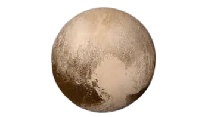
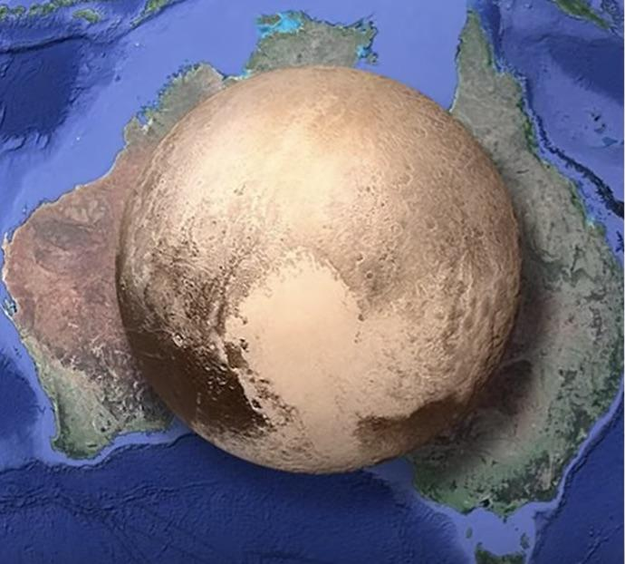

Pluto was considered the ninth plant from its discovery in 1930 until its reclassification in 2006. During that time, science had discovered many dwarf planets in the outer solar system like Pluto, and they were faced with the choice of listing them all as planets or revising the criteria for a planet. Ultimately, they decided that a planet must:
Being in the region beyond Neptune, it is likely that other objects will cross Pluto's orbital path. And thus dwarf planets were created.
FUN FACT: Pluto was named by an 11 year old girl in 1930. Her grandfather submitted the name to the Lowell Observatory and it was selected.

FUN FACT: Pluto is much smaller than Earth!